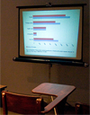

people doing strange things with electricity
The 110208th dorkbot-nyc meeting took place at 7pm on Wednesday, December 3rd, 2008 at Location One in SoHo.
The meeting was free and open to the public. Please brought snacks to share. There was even a dorkbot birthday cake -- our 9th year!?!
It featured the alkaline and perchlorated:

Fang-Yu Lin: Political Science 101
Political Science 101: A Crash Course in Civil Discourse on Political Blogs is a net art installation that constantly scans and monitors hundreds of political blogs for headlines, keywords and trends. The "learnings" are presented as slides that are generated in real-time, using textbook style charts and graphs. A hacked slide projector projects these virtual slides to the screen in a simulated classroom setting. Hence, the class is a study of blogs as a political medium, and an appraisal of its traits and uses.
http://compustition.com/projects/polisci101
Alicia Gibb: Bug Labs
Bug Labs is a new kind of technology company, enabling a new generation of engineers to tap their creativity and build any type of device they want, without having to solder, learn solid state electronics, or go to China. Bug Labs envisions a future where CE stands for Community Electronics, the term "mashups" applies equally to hardware as it does to Web services, and entrepreneurs can appeal to numerous markets by inventing "The Long Tail" of devices. We believe everybody is an inventor at heart, so we've developed a platform for users to create and forever modify their favorite gadget, allowing for ultimate customization and use.
http://www.buglabs.net
Jeremy Rotsztain: Media Impressionism
Media Impressionism is just one possible term for the practice of remixing cinematic imagery using well known practices from painting (such as collage, pointillism, and action painting), but using software-based tools. In this dorkbotty presentation, I'll discuss a few of my recent video art and computational imaging projects and share my working process.
http://www.mantissa.ca
Some images from the meeting
Roberto Tobar's images
Next meeting: 07 Jan 2009